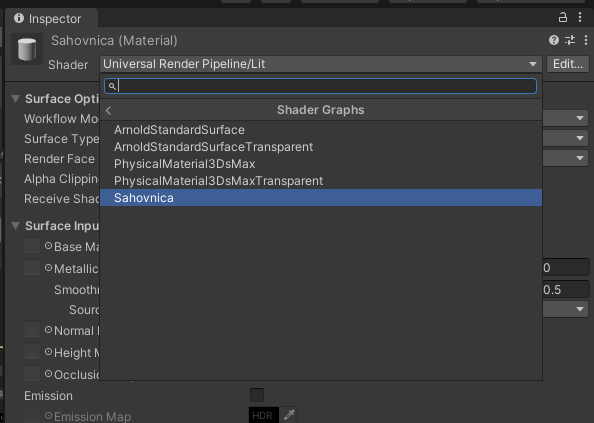

Navodila za izdelavo aplikacije Klub Gaja
V tem projektu boste izdelali aplikacijo za obogateno resničnost, kjer igralec s klikom na enega izmed treh gumbov (Račke, Makarena, Twist) izbere glasbo in vrsto plesa. Lik, v našem primeru bo to humanoidni robot z imenom Kyle, mora ob kliku nemudoma začeti plesati izbrani ples. S klikom na gumb Stop glasbo ugasnemo in tudi robot preneha plesati. Aplikacija sodi na področje obogatene resničnosti, ker bosta 3D modela robota in plesišča vezana na slikovni marker. Pri implementaciji obogatene resničnosti bomo uporabili programsko orodje Vuforia.
Datoteke, ki ti bodo pomagale pri izdelavi aplikacije, lahko preneseš s klikom na spodnji gumb.
Postavitev scene
Najprej ustvari nov Unity projekt.
Prenesi gradivo s pripravljenimi datotekami in uvozi datoteko formata .unitypackage (Assets > Import Package > Custom Package).
Igra je sestavljena iz ene scene, v kateri se v osnovi nahajajo igralni objekti kot je prikazano na spodnji sliki:
- Plesisce,
- Robot.
Robot naj bo otrok objekta Plesisce. Prav tako na obeh omenjenih objektih izklopi fiziko metanja in prikazovanja senc, saj za trenutni projekt sence niso pomembne in bi z njihovo implementacijo zgolj obremenjevali računalnik. Spremenljivki za vklop in izklop omenjenih funkcionalnosti (Cast Shadows, Receive Shadows) najdeš v oknu Inspector znotraj komponente Mesh Renderer.

3D modela plesišča ni v mapi s predpripravljenimi gradivi in ga boš moral ustvariti sam. Plesišču dodaj tudi komponento Material, ki ga ustvariš sam. Naj se material nahaja v mapi Assets > Materiali. Kreiranje utripajočega kockastega vzorca (kot v uvodnem videu) je razloženo v zadnjem poglavju - Dodatne vsebine.
Implementacija animacij
Če želimo, da naš robot miga v ritmih glasbe, moramo implementirati animacije. Za humanoidne 3D modele (to so 3D modeli, ki po obliki in načinu premikanja spominjajo na človeka) spletna platforma Mixamo nudi širok izbor animacij, katerih se bomo poslužili tudi mi.
Vpiši se v platformo Mixamo in s klikom na gumb UPLOAD CHARACTER v vnosno polje vstavi 3D model Robot Kyle (najdeš ga v mapi Assets > 3DModeli > Robot Kyle > Model > Robot Kyle.fbx).
Večina animacij, ki jih boš uporabil v projektu, se že nahajajo v mapi Assets > Animacije. Manjka pa animacija plesa makarena. Poišči jo, izberi in jo prenesi s klikom na gumb DOWNLOAD ter jo shrani v mapo k ostalim animacijam.
V mapi Assets > Animacije ustvari Animator Controller (Create > Animator Controller), ki bo skrbel za prehajanje med animacijami; poimenumj ga Plesi. Ob zagonu aplikacije in ob kliku na gumb Stop se mora predvajati animacija Idle, ob kliku na gumb s plesom pa se mora nemudoma začeti predvajati ustrezna animacija za ples.
Oblika animatorja je naslednja:
Prehode med animacijami bomo nadzorovali s štirimi parametri tipa Trigger (sprožilec): zacni_idle, zacni_makarena, zacni_twist, zacni_racke.
S klikom na gumb + v zavihku Parameters ustvari parametre in jih ustrezno veži na prehode med aplikacijami.
To narediš tako, da klikneš na puščico med dvema animacijama in v oknu Inspector v zavihku Conditions klikneš na ikono + ter izbereš parameter, ki bo aktiviral prehod iz ene animacije v drugo.
Primer: robot pleše twist; uporabnik pritisne gumb Stop. Pri tem se bo moral sprožiti parameter zacni_idle, ki bo aktiviral predvajanje animacije Idle.
Pri vsakem prehodu med animacijami odkljukaj Has Exit Time, saj želimo, da aplikacija med animacijami prekljaplja v trenutku, ko pritisnemo na gumb.
V oknu Inspector za vsako animacijo obkljukaj Loop Time, saj želimo, da jo robot ponovi več kot enkrat, če sami ne preklopimo med plesi in tako prekinemo animacijo.

Animator Controller Plesi dodaj kot komponento objektu Robot Kyle v sceni.
Implementacija uporabniškega vmesnika
Uporabniški vmesnik je sestavljen iz štirih gumbov: trije za izbiro plesa in en gumb Stop, ki skrbi za to, da robot neha plesati in glasba neha igrati. Če želimo v sceno postaviti gumb, moramo najprej kreirati Platno (ang. canvas). Tega najdemo v zavihku UI > Canvas. Preimenuj ga v Platno. V komponenti Canvas spremeni Render Mode v Screen Space - Overlay in v komponenti Canvas Scaler podaj resolucijo naprave, na kateri boš poganjal aplikacijo (npr. Samsung Galagy S7 ima resolucijo 1440 x 2560).
Nato usvtarimo štiri gumbe, ki naj bodo otroci objekta Platno. Najdemo jih v zavihku UI > Button. Poimenuj jih Makarena, Twist, Racke in Stop. Prav tako jim dodaj napise (objekt Text, ki je otrok posameznega gumba), po želji spremeni barvo, pisavo in spremeni pozicijo ter velikost na platnu.
Implementacija zvoka
Da bo scena bolj pregledna, bomo vanjo dodali prazen igralni objekt (Create Empty) in ga poimenovali Upravitelj zvoka. Ta naj ima tri otroke, pri čemer bo vsak namenjen predvajanju ene skladbe. Poimenuj jih Makarena, Twist in Racke.
Če želimo, da je objekt sposoben predvajati zvočne datoteke, mu moramo dodati komponento Audio Source in nanjo vezati pravilno skladbo. Zvočne datoteke se nahajajo v mapi Assets > Glasba.
Obkljukaj tudi spremenljivko Loop, saj želimo, da se skladba ponovi, ko pride do konca, in odkljukaj Play On Awake, saj želimo, da ob zagonu aplikacije ne igra nobena skladba.
Implementacija logike
Po navadi za logiko igre skrbijo skripte, v našem primeru (ker projekt ni tako zahteven) pa bo zadostovala uporaba že implementirane funkcionalnosti gumbov - funkcija On Click(). Najdete jo v oknu Inspector v komponenti Button.
S klikom na gumb + lahko dodajate akcije, ki naj se izvedejo ob kliku na gumb. V našem primeru so to:
- začni predvajati ustrezno animacijo,
- ustavi vse ostale animacije,
- začni predvajati ustrezno skladbo,
- prenehaj predvajati vse ostale skladbe.
Ob kliku na gumb + se zgenerira okno, v katerega moramo prenesti igralni objekt iz scene, na katerega želimo vplivati s prej naštetimi akcijami.
V primeru animacij je to Robot Kyle, saj vsebuje komponento Animator, ki je zadolžena za predvajanje animacij. V primeru predvajanja glasbe
pa so to otroci objekta Upravitelj zvoka, saj vsebujejo komponento Audio Source, ki je zadolžena za predvajanje skladbe.
V spustnem okencu No Function izberemo najprej komponento, na katero želimo vplivati (Animator oziroma Audio Source) ter nato funkcijo, ki jo želimo uporabiti na izbrani komponenti:
- SetTrigger(string): aktiviraj parameter trigger, ki bo nato sprožil animacijo,
- ResetTrigger(string): deaktiviraj parameter trigger, ki bo nato deaktiviral animacijo,
- Play(): vir zvoka bo pričel igrati skladbo,
- Stop(): vir zvoka bo prenehal igrati skladbo.
Ustrezno dodaj vse potrebne funkcije na komponento On Click () vseh gumbov v sceni.
Poženi aplikacijo s klikom na gumb Play in stestiraj njeno delovanje.
Implementacija obogatene resničnosti
Naslednji korak je implementirati obogateno resničnost, tako da bo aplikacija prepoznala slikovni marker in nanj postavila našo sceno s plesiščem in robotom. Pri tem bomo uporabili algoritme računalniškega vida, ki so del programskega orodja Vuforia.
Prijavi se v Vuforia Developer Portal in najprej pod zavihkom License Manager s klikom na gumb Get Basic ustvari svojo licenco, ki jo boš moral vnesti v vsak svoj projekt, ki bo uporabljal Vuforio.
Če si licenco že ustvaril in si tudi že zgeneriral podatkovno bazo s slikovnim markerjem pri enem izmed prejšnjih projektov, preskoči naslednjih nekaj korakov.

Licenco poimenuj in svojo izbiro potrdi s klikom na gumb Confirm.
Nato pod zavihkom Target Manager ustvari novo podatkovno bazo s klikom na Add Database. V tej bazi se bodo nahajali vsi naučeni slikovni markerji oziroma tarče.
Podatkovno bazo poimenuj in potrdi svojo izbiro s klikom na gumb Create.
V naslednjih korakih bomo Vuforio naučili kako izgleda naša slikovna tarča. Slika tarče se nahaja v datoteki z gradivi (2d_marker.jpg). Marker uvozi v Vuforia Developer Portal s klikom na gumb Add Target.
Ker gre v našem primeru za prepoznavo 2D slikovnega markerja, označi tip markerja kot Image, poišči mesto datoteke s sliko markerja, vnesi njegovo širino v metrih in po želji spremeni ime.

Po nekaj minutah ( < 5min) je slikovni marker sprocesiran. Če kliknemo na ime markerja, se nam odpre okno z njegovimi informacijami. S klikom na gumb Show Features lahko vidimo
točke, ki jih je Vuforia prepoznala za zanimive oziroma za ključne karakteristike slike, ki jih bo iskala v sliki iz kamere med poganjanjem aplikacije. Opazimo lahko, da se karakteristične točke
nahajajo na ostrih robovih in na prehodu med dvema kontrastnima barvama.
Ker je karakterističnih točk veliko, si je slikovni marker prislužil oceno 5 zvezdic.


Sedaj imamo vse potrebno, da implementiramo Vuforio v naš Unity projekt. Celoten paket programov in funkcij, ki jih ponuja Vuforia, naložimo v obliki Unity paketa (add-vuforia-package-10-9-3.unitypackage), ki je shranjen v datoteki z gradivi.
V Unity ga naložimo prek Assets > Import Package > Custom Package in izbiro potrdimo s klikom na gumb Import in nato Update.

V sceno postavi objekt ARCamera (Vuforia Engine > ARCamera), ki ima enako vlogo kot Main Camera z dodanimi komponentami za prepoznavo slike. Objekta Main Camera zato ne potrebujemo več in jo lahko izbrišemo iz scene.
V objektu ARCamera kliknemo na gumb Open Vuforia Engine configuration v komponenti Vuforia Behaviour in v vnosno polje App License Key skopiramo licenco, ki smo jo predhodno ustvarili na Vuforia Developer Portalu.


Naslednji korak je v sceno implementirati slikovni marker, na katerega bosta vezana objekt Plesisce in Robot Kyle. Slikovni marker (Image Target) se nahaja v meniju Vuforia Engine > Image Target. Za pravilno delovanje potrebuje informacijo o sliki, ki jo mora iskati in ji slediti, zato moramo njegovi komponenti Image Target Behaviour dodati podatkovno bazo, ki smo jo predhodno ustvarili v Vuforia Developer Portalu. Iz portala jo na računalnik prenesemo s klikom na gumb Download Database; preden jo uvozimo v objekt Image Target jo je potrebno prenesti iz mape v računalniku v Unity projekt (Assets > Import Package > Custom Package).


Spremenimo še velikost objekta Plesisce, da bo sorazmerne velikosti z objektom Image target in postavimo objekt Plesisce pod objekt Image target, tako da bo njegov otrok.
V zadnjem koraku razvoja aplikacije moramo aplikacjio zgraditi in jo naložiti na Android napravo, kjer jo bomo tudi stestirali. V meniju File > Build Settings klikni na gumb Add Open Scenes.
En Unity projekt ima lahko namreč več scen, ni pa nujno, da so vse namenjene končni aplikaciji (nekatere se lahko uporabljajo samo za prototipiranje).
Ker bomo aplikacijo poganjali na Android telefonu, moramo spremeniti platformo. Izberi platformo Android in svojo izbiro potrdi s klikom na gumb Switch Platform. V meniju Player Settings (levo spodaj) v zavihku Player > Other Settings > Identification
spremeni Minimum API Level na Android 8.0 'Oreo' (API level 26).
Nato klikni na gumb Build in izberi lokacijo, kamor naj se shrani končna aplikacija.


Dodatne vsebine
V tem poglavju bomo spoznali osnove senčilnika.
Senčilnik je skripta, ki matematično in z uporabo algoritmov določi barvo posameznega piksla glede na svetlobne pogoje in vhode senčilnika, ki so del komponente Material.
Po meri narejeni senčilniki se uporabljajo za upodabljanje tekočin, listja, nočnega gledanja, toplotnega gledanja itd.
Senčilnik narejen po meri za trenutne potrebe aplikacije se v prvi vrsti od standardnega senčilnika razlikuje v simultani uporabi dveh albedo tekstur (rumena, rožnata) in vpeljavi časovne komponente (izmenjevanje tekstur na šahovnici skozi čas).
Pisanja senčilnikov se lahko lotiš znotraj skripte z uporabo C# ali pa uporabiš vizualno programiranje (Shader Graph), ki temelji na povezovanju blokov v diagram.
Najprej je v meniju Window > Package Manager potrebno naložiti paket Universal RP.
Sedaj moramo ustvariti URP Asset in ga povezati z grafičnim cevovodom. V mapi Assets z desnim klikom miške izberi Create > Rendering > Universal Render Pipeline > Pipeline Asset (Forward Renderer).
Trenutno imamo v projektu dva grafična cevovoda - vgrajenega (Built-in Render Pipeline) in univerzalnega (Universal Render Pipeline). Med senčilniki preklapljamo v meniju Edit > Project Settings > Graphics. Na vrhu menija Graphics v polje Scriptable Render Pipeline Settings s klikom na ikono s krogcem vnesi UniversalRenderPipelineAsset.
Ker trenutni materiali in teksture niso kompatibilni z novim grafičnim cevovodom, se obarvajo rožnato. To lahko popravimo s klikom na Edit > Render Pipeline > Universal Render Pipeline > Upgrade Project Materials to UniversalRP Materials in svojo izbiro potrdimo s klikom na gumb Proceed.
Nov prazen senčilnik (Blank Shader Graph) ustvari v mapi Assets > Materiali z desnim klikom ter z izbiro Create > Shader > Blank Shader Graph. Preimenuj ga v Sahovnica.
Z dvakratnik klikom na senčilnik Sahovnica se odpre novo okno za vizualno programiranje senčilnikov. Poznamo več vrst senčilnikov, ki pridejo v poštev v različnih fazah upodabljanja scene.
Edina senčilnika, ki sta nujno potrebna za prikazovanje slike, sta senčilnik ogljišč in senčilnik fragmentov (oziroma pikslov).
Senčilnik oglišč je računalniški program, ki je namenjen procesiranju oglišč 3D modela, ki oglišča pripravi za nadaljne faze v grafičnem cevovodu.
Senčilnik fragmentov pa je računalniški program, ki za vsak piksel na zaslonu izračuna njegovo barvo oziroma barvo piksla na zaslonu.
V našem primeru bomo senčilnik oglišč pustili pri miru, spremenili pa bomo senčilnik fragmentov, ki je sestavljen iz naslednjih vozlišč:
- Branch: je logično vozlišče s tremi vhodi in enim izhodom, ki glede na pravilnost trditve na vhodu Predicate, vrne trditev vezano na vhod True oziroma trditev vezano na vhod False.
- Checkerboard: je proceduralno vozlišče s štitimi vhodi in enim izhodom, ki generira vzorec šahovnice, kjer vhoda Color A in Color B določata izmenjujoči si barvi, vhod Frequency pa velikost vzorca.
- Color: je vozlišče, ki nima vhodov in samo en izhod ter se ga zato uporablja kot vhod v druga vozlišča.
- Comparisson: je logično vozlišče z dvema vhodoma in enim izhodom ter logično operacijo. Njegova naloga je primerjati vhoda A in B glede na izbrano logično operacijo in vrniti logično spremenljivko tipa boolean. Po navadi se to vozlišče uporablja v kombinaciji z vozliščem Branch.
- Multiply:je matematično vozlišče z dvema vhodoma in izhodom, ki vrne zmnožek vhoda A z vhodom B, ki sta vektorske oblike.
- Sine (sinus): je matematično vozlišče z enim vhodom in enim izhodom, ki vrne sinus vrednosti na vhodu In.

- Time: je vozlišče, ki nima vhodov, nudi pa več izhodov ter se ga zato uporablja kot vhod v druga vozlišča.
Vozlišče dodamo v graf z desnim klikom in nato v vnosno polje Create Node vpišemo ime željenega vozlišča. Med seboj jih povežemo tako, da kliknemo in držimo izhod prvega vozlišča, ga povežemo z vhodom drugega vozlišča in spustimo tipko na miški (princip drag and drop). Senčilnik shranimo s klikom na gumb Save Asset v zgornjem levem kotu okna Sahovnica.
Poskusi sam povezati in nastaviti parametre vozlišč, tako da bo na koncu šahovnica dvobarvna in izmenično enakomerno skozi čas spreminjala barve na poljih.
Rešitev naj bi izgledala nekako takole:
Senčilnik uporabimo tako, da ustvarimo nov material, ki ga poimenujemo Sahovnica in namesto senčilnika Universal Render Pipeline/Lit izberemo senčilnik Sahovnica v zavihku Shader Graphs.

Ustvarjen material lahko sedaj uporabimo na igralnem objektu Plesisce v sceni.
Svoje znanje, ki si ga pridobil tekom tega projekta, lahko preveriš s kratkim kvizom: